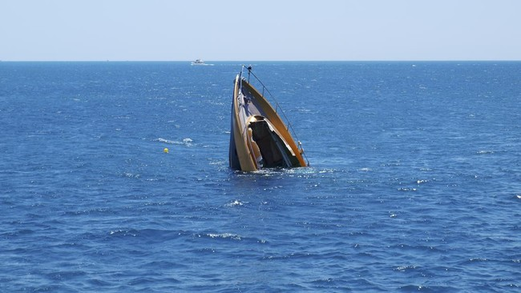

Kapal Rute Jakarta-Lombok Karam di Selayar, 24 Orang Hilang
Syahrul Ramadan | CNN IndonesiaRabu, 13 Mar 2024 08:39 WIB Kepala Kantor Basarnas Makassar, Mexianus Bekabel mengatakan bahwa pada Senin (11/3) kemarin, ditemukan dua orang terdampar di Pulau Jampea, Kabupaten Selayar, dalam kondisi selamat dan meninggal dunia.
"Kemudian 9 orang ditemukan selamat dan 1 orang meninggal dunia di Pulau Kayuadi, Kabupaten Kepulauan Selayar," kata Mexianus, Selasa (12/3).